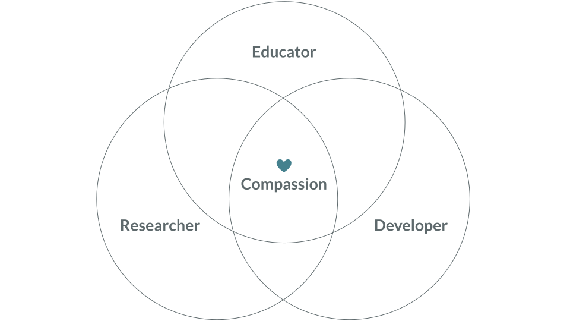
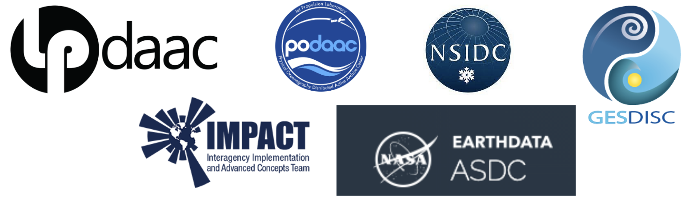
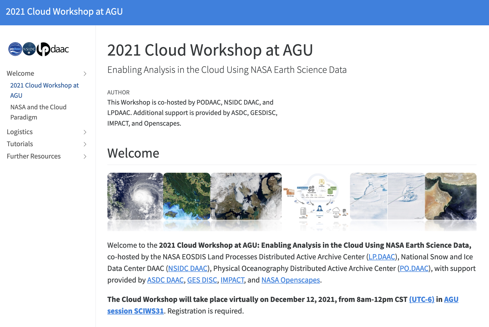
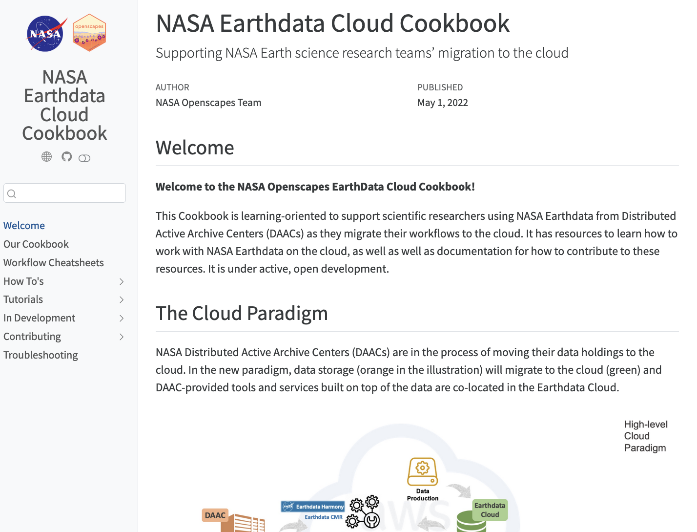
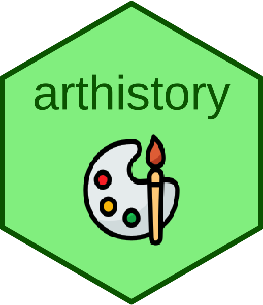
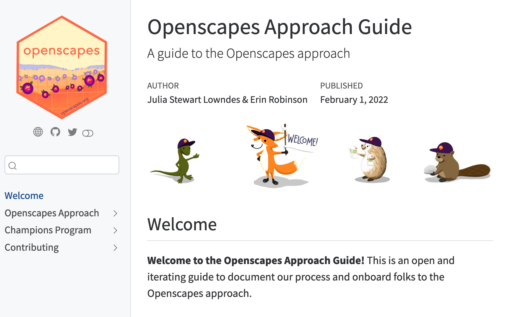

Quarto is a new, open-source,
scientific and technical
publishing system
the goal is to make the process of creating
and collaborating dramatically better




The R Markdown ecosystem

Quarto: Next generation R Markdown

Quarto highlights
 Consistent implementation of attractive and handy features across outputs: tabsets, code-folding, syntax highlighting, etc.
Consistent implementation of attractive and handy features across outputs: tabsets, code-folding, syntax highlighting, etc.
 More accessible defaults as well as better support for accessibility
More accessible defaults as well as better support for accessibility
 Guardrails, particularly helpful for new learners: YAML completion, informative syntax errors, etc.
Guardrails, particularly helpful for new learners: YAML completion, informative syntax errors, etc.
 Support for other languages like Python, Julia, Observable, and more via Jupyter engine for executable code chunks.
Support for other languages like Python, Julia, Observable, and more via Jupyter engine for executable code chunks.
Quarto CLI orchestrates
each step of rendering


Develop a mentor community across
NASA Earth science data centers
Co-create and teach common tutorials
to support researchers as they migrate analytical workflows to the Cloud






Quantifying
Art Historical
Narratives
Holland Stam
Art History +
Visual and Media Studies
Class of 2022
Duke University
with Sara Lemus 


1. Make the implicit explicit
2. Onboard learners as contributors
3. Psychological safety & growth mindset


Say hello to Quarto!
TO DO / LOW PRIORITY – REPLACE ITEMS WITH TILES WITH SCREENSHOTS
Pick up where we left off: github.com/mine-cetinkaya-rundel/hello-quarto-demo
Quarto documentation: quarto.org/
Talks:
- coming up: the talks at conf???
- Reproducible authoring with Quarto
- Julie’s Quarto tutorial???
- Openscapes Community Call
Quarto Gallery: quarto.org/docs/gallery/

Earthrise by Amanda Gorman1
So, earth, pale blue dot
We will fail you not.
Just as we chose to go to the moon
We know it’s never too soon
To choose hope.
We choose to do more than cope
With climate change
We choose to end it—
We refuse to lose.
Together we do this and more
Not because it’s very easy or nice
But because it is necessary,
Because with every dawn we carry
the weight of the fate of this celestial body orbiting a star.
And as heavy as that weight sounded, it doesn’t hold us down,
But it keeps us grounded, steady, ready,
Because an environmental movement of this size
Is simply another form of an earthrise.